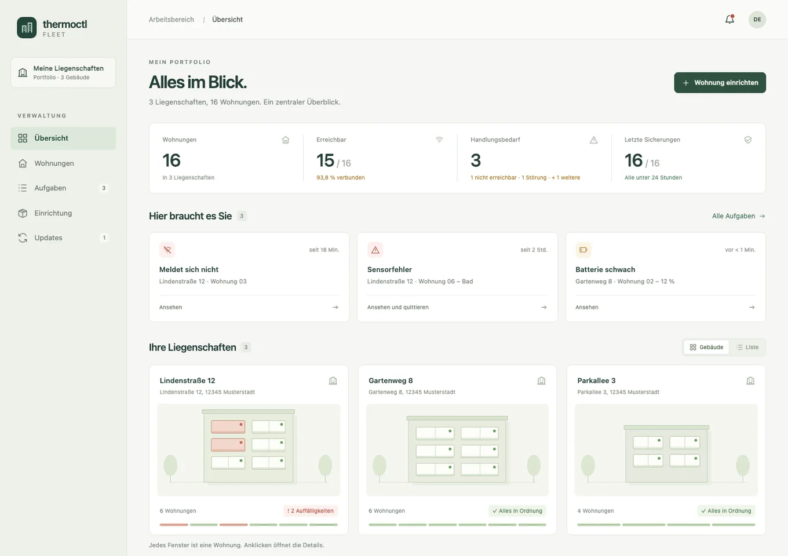
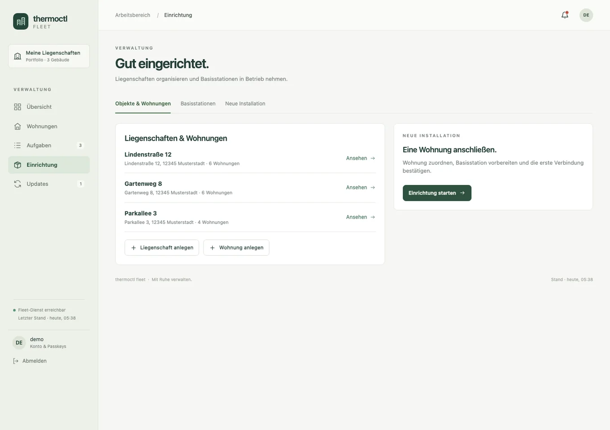
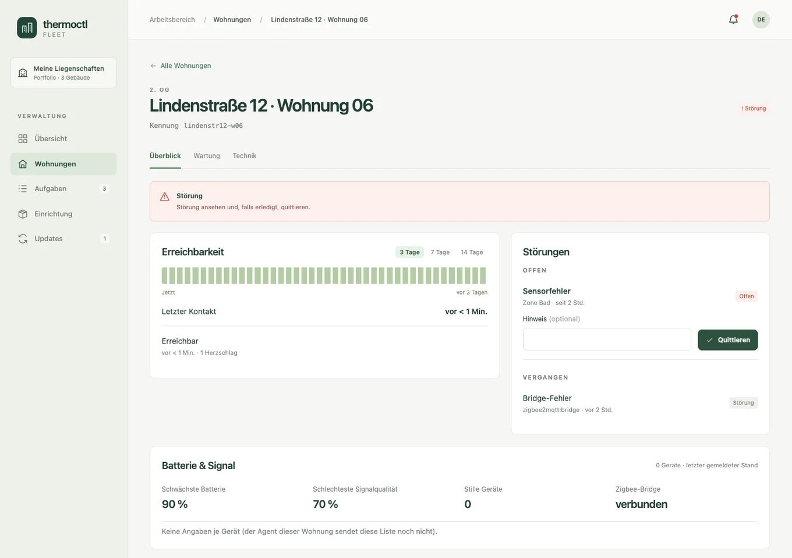
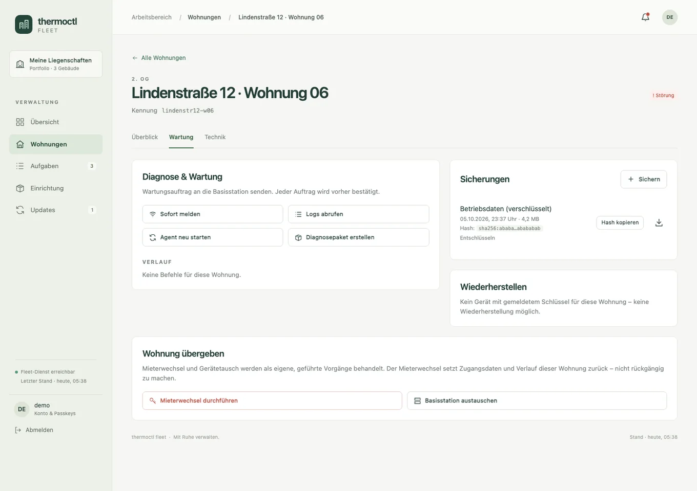

Ein Lebenszeichen genügt.
Regelmäßige Rückmeldungen zeigen, welche Basisstation erreichbar ist. Bleibt eine aus, sehen Sie es in Ihrer Übersicht.
Letzte RückmeldungenKontakt fehlt
Wissen, wo alles läuft. Und sehen, wo Sie gebraucht werden. Fleet bringt Ihre thermoctl-Installationen an einen Ort.

Fleet sortiert technische Meldungen so, dass Sie sich um die richtigen Dinge kümmern können.
Regelmäßige Rückmeldungen zeigen, welche Basisstation erreichbar ist. Bleibt eine aus, sehen Sie es in Ihrer Übersicht.
Von der schwachen Batterie bis zum Diagnosepaket: Der nächste sinnvolle Schritt ist direkt erreichbar.
Fleet braucht den Zustand der Technik. Die persönlichen Einstellungen und die Raumtemperaturen bleiben vor Ort.
Ein kurzer Blick für den Alltag.
Die passenden Details für den Fall der Fälle.
01 / Übersicht · Die wichtigsten Meldungen zuerst.
Jede Wohnung hat ihre eigene thermoctl-Installation. Ein kleiner Agent meldet deren Zustand an Fleet und prüft Wartungsaufträge lokal. Die Heizungssteuerung läuft unabhängig weiter.
Das Zusammenspiel verstehenMit Bildern, verständlichen Abläufen und den Antworten für Ihren Alltag.

Vom vorbereiteten Gerät bis zum ersten Lebenszeichen in Fleet.
Anleitung ansehen
Was die Zustände bedeuten und wo Sie sinnvoll anfangen.
Anleitung ansehen
Welche Daten wohin fließen und wie Sicherungen geschützt werden.
Anleitung ansehenDie wichtigsten Antworten zum Prinzip hinter Fleet.
Alle Fragen & AntwortenFleet zeigt den technischen Zustand Ihrer Installationen. Temperaturen, Zeitpläne und die eigentliche Regelung bleiben in thermoctl direkt in der Wohnung.
Die lokale thermoctl-Installation arbeitet unabhängig von Fleet weiter. Fleet erkennt den fehlenden Kontakt und macht die betroffene Wohnung sichtbar. „Nicht erreichbar“ beschreibt die Verbindung, nicht automatisch den Heizbetrieb.
Der Agent übermittelt technische Zustandsdaten wie Erreichbarkeit, Gerätefehler, Batteriestand und Softwareversionen. Raumtemperaturen, Heizpläne und Mieternamen gehören nicht zu diesen Meldungen.
Das Projekt ist quelloffen und für den eigenen Betrieb vorgesehen. Der Fleet-Dienst läuft auf Ihrem Server; ein separater Agent verbindet jede Basisstation mit ihm. Den Einstieg und die Voraussetzungen finden Sie in der Dokumentation.
Mit fiktiven Beispieldaten ausprobieren. Ganz ohne Anmeldung.